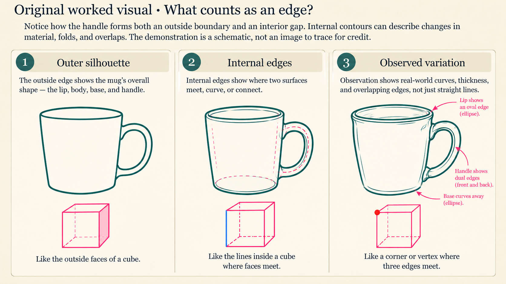

Observe
Choose an ordinary object with a distinctive silhouette, such as a shoe, cup, leaf, or key. Study its large edges before noticing smaller features.
KHAEMENES ACADEMY · ART 101 · UNIT 02
One original weekly assignment · Observation, experiment, and reflection
ART 101 · UNIT 02 · WEEK 02
Work through each observation, investigation, and revision before recording your studio evidence. These activities are formative and do not grant Academy-authorized mastery.
How can an artist distinguish an observed edge from an assumed outline?
Open one stage at a time. The original demonstration, interactive laboratory, assignment, evidence tools and assessment remain below.
Place a shoe on a table. Trace its silhouette with your eyes before drawing. In a first two-minute blind contour, keep your gaze on the shoe and allow the line to wander. In a five-minute modified contour, check the page briefly and compare the direction of the heel, opening, and sole. A more accurate line is not necessarily a smoother line: it reflects observed changes in direction.
Investigate a documented drawing or print by an artist who uses expressive or descriptive line. Compare a specific line decision with your own contour study. Record creator, title, date or period, medium, collection or publisher, and source. Separate what is visible from any interpretation of the artist's intention.
Use an institutional catalog or credible publication; credit sources and respect image-reuse rights.
Produce three original physical studies of one object: a blind contour, a modified contour, and a revised observational drawing. Label duration, viewpoint, medium, and date. Preserve the earlier studies. Explain two specific edges you corrected and one you still find difficult.
Use physical materials or an appropriate digital medium. Original physical work should be retained even if a digital record is created.
Use the existing 100-point reviewer rubric and Academic Evidence record below. Check these dimensions: Observed edges; Three process studies; Evidence-based revision.
Emerging: limited observational evidence. Developing: partial evidence and basic revision. Proficient: complete, accurate studies with explained revision. Advanced: multiple controlled comparisons, precise reasoning and a clear next investigation.
These descriptors are formative. The standalone page cannot certify the Academy's 80% mastery requirement.
How does sustained observation change the marks an artist makes?
Contour drawing describes the visible boundaries and internal edges of an object. It is not a coloring outline or a test of speed. An artist follows edges carefully with the eyes and translates those changes into marks. Blind contour means looking at the object rather than the paper; modified contour permits occasional checks of the drawing.
Choose an ordinary object with a distinctive silhouette, such as a shoe, cup, leaf, or key. Study its large edges before noticing smaller features.
Make a two-minute blind contour drawing without erasing. Then make a five-minute modified contour drawing, looking back and forth deliberately.
Compare the two attempts. Identify at least three edge relationships that became more accurate, expressive, or surprising.

Notice how the handle forms both an outside boundary and an interior gap. Internal contours can describe changes in material, folds, and overlaps. The demonstration is a schematic, not an image to trace for credit.
Alternative access: use pencil and paper only. The digital sketch pad below is optional practice, not a replacement for the required physical or independently produced artwork.
Practice with a pointer, stylus, or finger. Draft strokes are saved on this device in the selected local workspace; export PNG for a separate backup. This is not authenticated student storage.
Local workspaces separate drafts only within this browser. They do not verify Academy identity, secure private records, or change written-evidence ownership.
Each attempt draws five questions from fifteen original lesson-aligned questions. Four correct is 80% formative practice only. Answers lock after submission; a fresh retake reshuffles questions and options. This result cannot authorize Week 03 progression or certify studio evidence.
Observation and accuracy (25); evidence of experimentation (20); line control and purposeful emphasis (20); preservation of process studies (15); written comparison and reflection (15); artwork labeling and care (5). Proposed mastery threshold: 80% with authorized reviewer confirmation. This page does not award a certified grade.
Archive this week's artwork before moving on.